Normal Math-Formulas
Introduction
Following you find a nomination of various mathematical formulas. They should be a reference and also be helpful, to close possibly knowledge gaps. Because without good math knowledge complex games and applications can't be realized.
Note: Instead of the used sign '^' please use the PureBasic function Pow() from the 'Math' library. 'PI' stands for the constant value "PI = 3.1415...". An example for realizing such a formula in PureBasic code: A = PI*r^2 will be A = PI*Pow(r,2)
Square
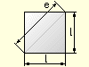
l = Side length
e = Corner measure (ment)
A = Surface
U = Extent
Surface: A = l^2
Extent: U = 4*l
Corner measure (ment): e = SQR(2)*l
Rhombus/Lozenge
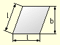
l = Side length
b = Width
A = Surface
U = Extent
Surface: A = l*b
Extent: U = 4*l
Rectangle
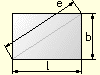
l = Length
b = Width
e = Corner measure (ment)
A = Surface
U = Extent
Surface: A = l*b
Extent: U = 2*l+2*b
Corner measure (ment): e = SQR(l^2+b^2))
Rhomboid/Parallelogramm
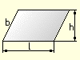
l = Lengthens
h = Height
b = Width
A = Surface
U = Extent
Surface: A = l*h
Extent: U = 2*l+2*b
Trapezoid
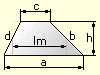
a = Side 1
b = Side 2
c = Side 3
d = Side 4
lm = Middle length
h = Height
A = Surface
U = Extent
Surface: A = (a+c)/2*h
Extent: U = a+b+c+d
Middle Length: lm = (a+c)/2
Triangle
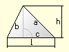
a = Side 1
b = Side 2
c = Side 3
l = Side length
h = Height
A = Surface
U = Extent
Surface:
A = (l*h)/2
A = 1/4*SQR(U*(U-2*a)*(U-2*b)*(U-2*c))
Extent: U = a+b+c
Polygon
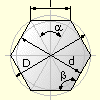
l = Side length
d = Interior circle diameter
D = Periphery diameter
n = Number of corners
a = Central angle
ss = Corner angle
A = Surface
U = Extent
Interior circle diameter: d = SQR(D*D-l*l)
Periphery diameter: D = SQR(d*d+l*l)
Side length: l = D*SIN(180/n)
Central angle: a = 360/n
Corner angle: ss = 180-a
Surface: A = n*l*d/4
Extent: U = l*n
Circle
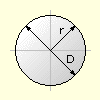
r = Radius
D = Diameter
A = Surface
U = Extent
Surface:
A = PI*r^2
A = PI/4*d^2
Extent:
U = 2*PI*r
U = PI*d
Sector of a circle
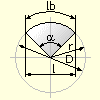
r = Radius
D = Diameter
l = Sinew length
lb = Length of curve
a = Central angle
A = Surface
U = Extent
Sinew length: l = 2*r*SIN(a/2)
Length of curve: lb = PI*r*a/180
Surface:
A = PI*D^2*a/1440
A = lb*r/2
Extent: U = lb+D
Circle section
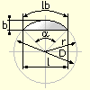
r = Radius
D = Diameter
l = Sinew length
lb = Length of curve
a = Central angle
b = Width
A = Surface
U = Extent
Sinew Length:
l = 2*r*SIN(a/2)
l = 2*SQR(b*(2*r-b))
Length of curve: lb = PI*r*a/180
Width:
b = l/2*TAN(a/4)
b = r-SQR(r^2-l^2/4)
Radius: r = b/2+l^2/(8*b)
Surface:
A = PI*d^2*a/1440-(l*(r-b))/2
A = (lb*r-l*(r-b))/2
Extent: U = lb+l
Annulus
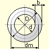
d = Inside diameter
D = Outside diameter
dm = Middle diameter
b = Width
A = Surface
Middle diameter: dm = (D+d)/2
Surface:
A = PI*dm*b
A = PI/4*(D^2-d^2)
Memory consumption of a picture
a = Width of picture (in Pixel)
b = Height of picture (in Pixel)
bits = Colordepth of the picture (in Bits)
size = a * b * (bits / 8)
Distance between two points
(x1|y1) = XY coordinates of point No. 1
(x2|y2) = XY coordinates of point No. 2
a = Distance between the points
a = SQR((x1-x2)^2 + (y1-y2)^2)
"Mixing" of two values
a = 1st Number
b = 2nd Number
v = Relationship (0% - 100%)
e = Result
e = ((a*v)/100) + ((b*(100-v)) / 100)